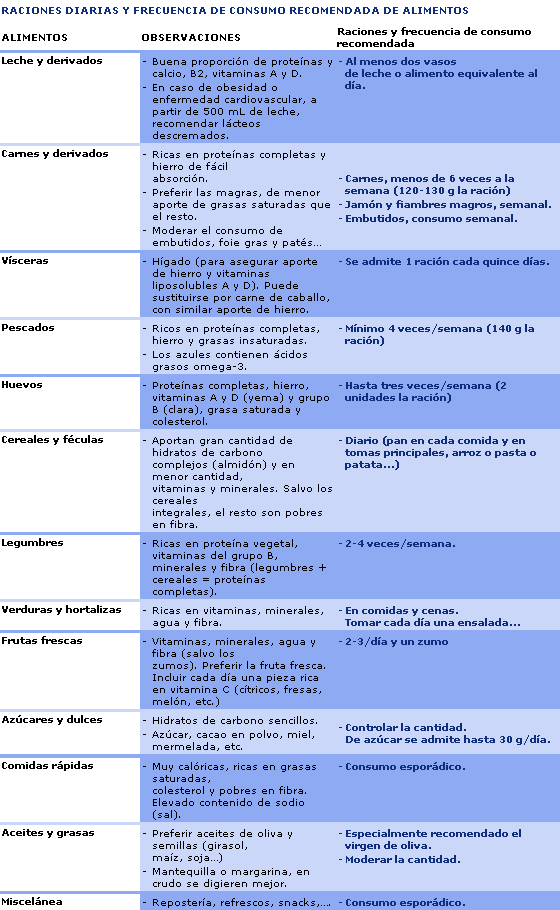

<ion-view view-title="Tabla Nutricional">
  <ion-content>
  <center><h1>Adolescencia: 12 a 18 años</h1></center>
<center><h3>Las necesidades nutritivas en la adolescencia vienen marcadas por los procesos de maduración sexual, aumento de talla y aumento de peso.</h3></center>
    
  </ion-content>
</ion-view>
